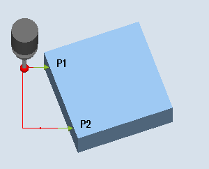
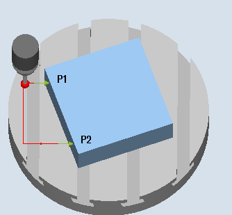

Funktion
Das Werkstück liegt beliebig, d. h. nicht parallel zum Werkstückkoordinatensystem (WKS) auf dem Arbeitstisch. Durch Messung zweier Punkte an der von Ihnen gewählten Werkstückbezugskante ermitteln Sie den Winkel zum aktiven Koordinatensystem. Diesen Winkel können Sie entweder als Drehung in einer Geometrieachse oder als translatorische Verschiebung in einer Rundachse (Rundtisch) in einer beliebigen oder in der aktiven NV korrigieren.
| Hinweis |
Maximaler MesswinkelMit der Messvariante "Kante ausrichten" können maximal Winkel von +/- 45 Grad gemessen werden. |
Messprinzip
Die Messvariante Kante ausrichten erfolgt nach dem Prinzip der 1-Winkel-Messung:
-
Bei einem in der Ebene gedreht aufgespannten Werkstück erfolgt die Winkelkorrektur im rotatorischen Teil der Geometrieachse, die senkrecht zur Messebene steht.
Beispiel für G17 Ebene: Messachse X, Versetzachse Y
-
Winkelkorrektur erfolgt in der Z-Drehung
-
Die Korrektur der Drehung in der NV erfolgt so, dass die wirkliche Lage der Kante (Istwert) und der gewünschte Sollwinkel (α) im Werkstückkoordinatensystem berücksichtigt werden.
-
-
Bei einem Werkstück auf einem Drehtisch erfolgt die Winkelkorrektur additiv zur translatorischen Verschiebung der Rundachse (Tischachse). Die Korrektur ist nur dann sinnvoll, wenn sich die Rundachse um die Geometrieachse dreht, die senkrecht zur Messebene steht.
Beispiel für G17 Ebene : Messachse X, Versetzachse Y
-
Winkelkorrektur erfolgt in der C-Achse. Die Rundachse C dreht einen Rundtisch um die Achse Z.
-
Nach der Messung sollte zum Ausrichten des Werkstücks die Rundachse neu positioniert werden.
-
Beispiel: G55 G0 C0.
-
Bei beiden Korrekturvarianten bleiben die translatorischen Anteile der NV unverändert und sollten nach dem Ausrichten Kante neu bestimmt werden. Dies kann in einem nachfolgenden Messprogramm mit der Funktion "Kante setzen" erfolgen.
|  |  |
Messen: Kante ausrichten (CYCLE998), | Messen: Kante ausrichten (CYCLE998), |
Messen ohne Spindelumschlag
Genaues Messen erfordert einen kalibrierten Messtaster, d.h. Arbeitsebene, Ausrichtung der Spindel in der Ebene und Messgeschwindigkeit beim Messen und Kalibrieren stimmen überein. Abweichungen können zu zusätzlichen Messfehlern führen.
Messen mit Spindelumschlag
Bei der Messmethode "3D-Taster mit Spindelumschlag" wird der Messpunkt P1 zweimal mit jeweils 180 Grad Spindelumschlag (Drehung des Messtasters um 180 Grad) und 0 Grad gemessen. Damit werden die Triggerpunkte für die entsprechende Achsrichtung für diese Messung aktuell neu bestimmt (kein Abgleich des Messtasters in Messrichtung erforderlich). Bei der Messmethode "3D-Taster mit Spindelumschlag" ist nur beim Kante ausrichten der Achsen in der Arbeitsebene (bei G17 XY) sinnvoll.
Der besondere Ablauf dieser Messung erlaubt die Verwendung eines unkalibrierten multidirektionalen Messtasters. Die Messtastertypen 712, 713 und 714 sind dafür nicht geeignet. Eine positionierbare Spindel ist zwingend erforderlich.
Voraussetzungen
Der Messtaster muss als Werkzeug mit Werkzeuglängenkorrektur aufgerufen werden.
Werkzeugtyp des Messtasters:
3D Multi-Taster (Typ 710)
Monotaster (Typ 712)
| Hinweis |
Eine genaue Winkelbestimmung erfordert zumindest in den Messpunkten eine entsprechende Oberflächengüte. Die Abstände zwischen den Messpunkten sind so groß wie möglich zu wählen. |
| Hinweis |
Die Funktion "3D-Taster mit Spindelumschlag" (Differenzmessung) ist nur in den Achsen der Ebene möglich. Für diese Messmethode können die Messtastertypen 712, 713 und 714 generell nicht verwendet werden. |
| Hinweis |
In Verbindung mit der Funktion "3D-Taster mit Spindelumschlag" oder bei Verwendung der Messtastertypen 712, 713 und 714 ist eine SPOS-fähige Spindel erforderlich. |
Ausgangsposition vor dem Messen
Messachse und Positionierachse (Versetzachse) können beliebig vorgewählt werden, dürfen aber nicht gleich sein.
Positionieren unter Berücksichtigung einer Schutzzone
Schutzzone = Nein
Der Messtaster wird in der Messachse maximal im Abstand vom Messweg DFA gegenüber der zu messenden Fläche vor dem Messpunkt P1 auf Messhöhe positioniert.
Schutzzone = Ja
Der Messtaster wird in der Messachse maximal im Abstand vom Messweg DFA und dem Betrag im Parameter DX (bei G17 und Messachse X) gegenüber der zu messenden Fläche vor dem Messpunkt P1 auf Messhöhe positioniert.
In beiden Fällen muss beim Messvorgang der Messpunkt P1 sicher erreichbar sein.
Sind bei der 1. Messung die Abstände von der Bezugskante zu groß gewählt, erfolgt keine Messung.
Zwischenpositionierung vom Messpunkt P1 zum Messpunkt P2
Zwischenpositionierung "kantenparallel"

Kante ausrichten (CYCLE998), Zwischenpositionierung "kantenparallel"
Der Messtaster fährt parallel zur Bezugskante im Abstand des Parameters L2 vor den Messpunkt P2. Dabei wird der Winkel aus den Parametern α und TSA berücksichtigt. TSA enthält den Wert für die maximal zulässige Winkelabweichung.
Zwischenpositionierung "achsparallel"
Kante ausrichten (CYCLE998), Zwischenpositionierung "achsparallel"
Der Messtaster fährt parallel zur Positionierachse (Versetzachse) im Abstand vom Parameter L2 vor den Messpunkt P2.
Position nach Messzyklus-Ende
Nach Beendigung des Messvorgangs steht der Messtaster am Messpunkt P2 im Abstand des Messweges DFA gegenüber der Messfläche.